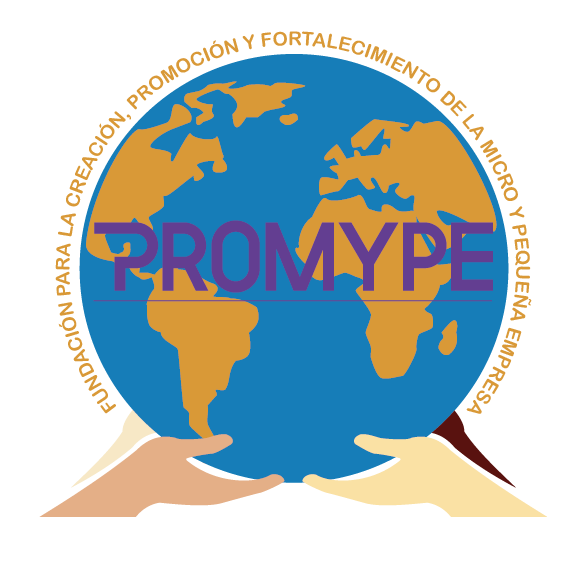

Nuestra historia
La fundación tiene sus orígenes en una de las aulas de lámina de la facultad de economía de la Universidad de El Salvador. Un día cinco de noviembre de 1995, haciendo trabajos de investigación, le surgió la idea a una estudiante, de una entidad que apoyara a las pequeñas, micro empresas y negocios de subsistencia, algo que fuera grande, que los ayudara financieramente para que fueran protegidos por las leyes económicas y pudieran crecer. Así en tantas pláticas, se pensó con otros de sus compañeros estudiantes, en una institución legalmente constituida, dándole lectura a la ley de Asociaciones y Fundaciones sin Fines de Lucro, y por experiencias de trabajo realizados por ella, se decidió, que mejor fuese una fundación. Pero se llegó el momento en que la joven hiciera su tesis de graduación para optar al grado de Licenciada en Administración de Empresas y llevó la idea a su asesor, siendo el tema relacionado a la planeación estratégica de la microempresa de confección a la medida, que era el trabajo que la aspirante desempeñaba en ese momento, pero su asesor rechazó el proyecto, manifestando que era algo imposible de realizar, por la magnitud de la tesis. Ella le explicó que en la mayoría de las veces, las tesis se quedaban en teoría escritas solo en libros, y no se llevaban a cabo los proyectos, y que lo que deseaba era trascender.
Pero siguió reuniéndose con personas que conocía, y otro grupo de compañeros(as) de la UES, pero se fue desvaneciendo, luego lo comunicó en las capacitaciones que impartía de parte de INSAFORP, y en los trabajos que realizaba en comunidades, pero no se logró mucho.
Pero un buen día, llegó una clienta a su negocio de costura a la medida que estaba ubicado en Colonia Miralvalle de San Salvador, y la estudiante le comentó del proyecto. Su clienta le manifestó, que tenía alguna experiencia con Cooperativas, Sindicatos y ADESCOS, y que se podían reunir para que le ampliara su inquietud, manifestándole que le comprendía perfectamente que era lo que deseaba realizar, y así comenzaron a construir los fines y a hacer todo el proceso de legalización de la fundación, presentándose en el año 2007 los documentos, las cuales tuvieron muchas observaciones y obstáculos de correcciones, por lo que se optó por darle de baja a la solicitud, para comenzarla de nuevo, pero se dejó reservado el nombre de PROMYPE en Asociaciones y Fundaciones sin Fines de Lucro, con la esperanza de seguir, pero las circunstancias de trabajo no lo permitieron y se quedó en pausa por algún tiempo. En el año 2020 en medio de la pandemia del Coronavirus y en situaciones muy difíciles, se inició de cero con un grupo de profesionales de distintas ramas y oficios, a quiénes se les reconoce su labor por haber creído en el proyecto de PROMYPE, la cual suscribió su nueva escritura de constitución, con fecha 8 de noviembre de 2020.